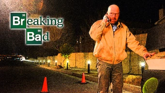
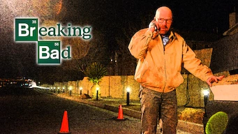
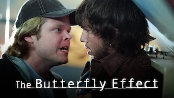
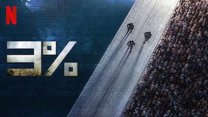
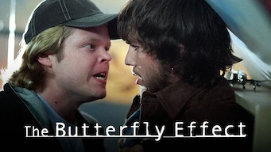
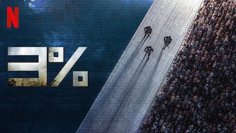

Sobre o autor:
Danilo é um amante da sétima arte desde pequeno, seu primeiro contato com filmes e séries se iniciou por meio da televisão, provavelmente assistindo sessão da tarde ou algum outro canal aberto.
A presença de uma filmadora na sua vida veio aos 6 anos, assim, registrando momentos da sua vida e se apaixonando cada vez mais pelo audiovisual.
Teve seu momento "youtuber", gravando videos de jogos e editando, tendo que aprender sozinho com tutoriais no youtube.
Até começou a cursar Produção Audiovisual na Universidade de São Caetano, mas acabou tendo que trancar o curso com a vinda da pandemia, mas pelo menos acabou se descobrindo na programação com a pesquisa e testes de vocação


 

 




 danilokovacs
danilokovacs